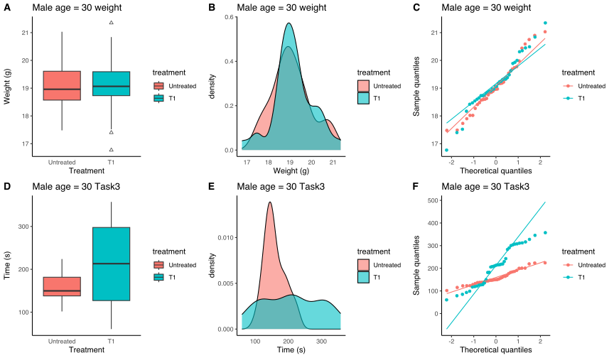
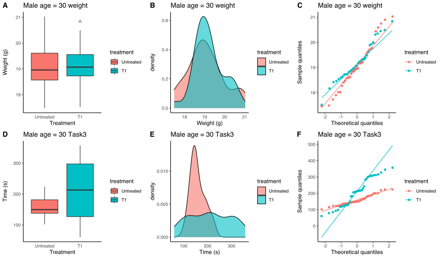

15 Introduction to statistics in R
What a journey so far! And now, maybe the scariest thing for a researcher: statistics.
Don’t worry, thanks to R it is easier than ever; in fact, R is the best programming language for statistics, it has lot of built-in functions and other packages for computing the right statistic you want.
Here, I will do a brief introduction to statistical tests, focusing in next chapters on each type. So, first of all the choice of the right test is fundamental: here, you can see a scheme describing how to choose the right test depending on you design (you can download a pdf version here).

This scheme is huge, but should be your mantra while doing analysis and, in particular, when you are designing your experiment. Why so much emphasis?! Because you should decide the test, the sample size etc prior to perform the experiments: experimental design makes 90% of the work. Remember it!
That said, we can see that the most asked question in the schema is “Parametric data?”, so let’s discuss about it and how to assess wheteher our data are parametric or not.
Evaluate parametric assumptions
Depending on if the data are parametric or not, we will use different tests. Here are the 4 assumptions for data to be parametric:
- Normality: data in each group must be normally distributed
- Homoschedasticity: there must be equal variances between groups you are going to compare
- Independency: data belonging to a group should be independent
- No outliers: there should not be any outlier in any group.
We will now see how to evaluate all the points except for 3, as there is no way to “measure” it and it depends on your design.
First of all, let’s import packages and data. We will now use a different dataset for these chapters, as the previous one was a sample-descriptive one, while here we want something with results.
Through <a href”script/Stat-test-dataset_create” download>this script I created a custom dataset, which you can download here
# 1. Load packages
suppressPackageStartupMessages(library(tidyverse))
library(ggplot2)
# 2. Load data
df <- read.csv("data/Stat-test-dataset.csv")
# 3. Change come column types
df <- df %>%
mutate("sex" = factor(sex),
"treatment" = factor(treatment, levels = c("Untreated", "T1")),
"Task1" = factor(Task1),
"Task2" = factor(Task2),
)
str(df)'data.frame': 600 obs. of 7 variables:
$ sex : Factor w/ 2 levels "Female","Male": 2 1 2 1 2 1 2 1 2 1 ...
$ age : int 3 3 3 3 3 3 3 3 3 3 ...
$ treatment: Factor w/ 2 levels "Untreated","T1": 1 1 2 2 1 1 2 2 1 1 ...
$ weight : num 6.43 3.42 4.97 4.63 7.31 3.27 5.58 3.27 5.9 4.22 ...
$ Task1 : Factor w/ 2 levels "0","1": 2 1 1 1 2 2 2 2 1 2 ...
$ Task2 : Factor w/ 2 levels "0","1": 2 1 1 2 2 1 1 2 2 2 ...
$ Task3 : num 222.4 202.3 36.7 221.8 178.8 ...Let’s explain this dataset:
- sex, age, weight (g) and treatment are self explanatory. These can be data from a disease mouse model treated with a test drug
- Task1 and Task2: this score indicates whether the mouse successfully (1) did the task or not (0)
- Task3: this indicates the time spent by the mouse to complete the task, in seconds
You can produce some plots at this point, if you want to explore the dataset. We will now move on to explore the parametric assumptions.
For this example, we will test if for comparing both weight and Task3 between T1-treated males at age == 30 vs. Untreated we should use parametric or non-parametric tests; we will see in details all the others comparisons when we will Samplely see the statistical tests. So, just for now, we will extrapolate from the df the data of interest:
male_30_weight_task3 <- df %>%
filter(sex == "Male" & age == 30) %>%
select(sex, age, treatment, weight, Task3)
head(male_30_weight_task3) sex age treatment weight Task3
1 Male 30 T1 19.38 290.04
2 Male 30 Untreated 19.17 123.19
3 Male 30 T1 20.31 98.74
4 Male 30 Untreated 18.76 148.15
5 Male 30 T1 18.85 312.12
6 Male 30 Untreated 19.98 183.93Alright, here are the data we need. I used a function that we didn’t see in the tidyverse chapter: select. It is used to select only specific columns of the dataset; in this case we use it to extrapolate columns of interest.
Visual inspection
Visual inspection is always recommended, as it can give us an idea of how our data are distributed and the eventual presence of outliers. We will see boxplot, density plot and QQ plot (read about it here).
Here the code to produce the three plots:
# 1. Create boxplots
male_30_weight_boxplot <- ggplot(male_30_weight_task3) +
geom_boxplot(aes(x = treatment, y = weight, fill = treatment), outlier.shape = 2) +
labs(x = "Treatment", y = "Weight (g)", title = "Male age = 30 weight") +
theme_classic() +
theme(axis.ticks.x = element_blank())
male_30_task3_boxplot <- ggplot(male_30_weight_task3) +
geom_boxplot(aes(x = treatment, y = Task3, fill = treatment), outlier.shape = 2) +
labs(x = "Treatment", y = "Time (s)", title = "Male age = 30 Task3") +
theme_classic() +
theme(axis.ticks.x = element_blank())
# 2. Create density plots
male_30_weight_density <- ggplot(male_30_weight_task3) +
geom_density(aes(x = weight, fill = treatment), alpha = 0.6) +
labs(x = "Weight (g)", title = "Male age = 30 weight") +
theme_classic() +
theme(axis.ticks.x = element_blank())
male_30_task3_density <- ggplot(male_30_weight_task3) +
geom_density(aes(x = Task3, fill = treatment), alpha = 0.6) +
labs(x = "Time (s)", title = "Male age = 30 Task3") +
theme_classic() +
theme(axis.ticks.x = element_blank())
# 3. Create QQ plots
male_30_weight_qq <- ggplot(male_30_weight_task3, aes(sample = weight, color = treatment)) +
geom_qq() +
geom_qq_line() +
labs(x = "Theoretical quantiles", y = "Sample quantiles", title = "Male age = 30 weight") +
theme_classic() +
theme()
male_30_task3_qq <- ggplot(male_30_weight_task3, aes(sample = Task3, color = treatment)) +
geom_qq() +
geom_qq_line() +
labs(x = "Theoretical quantiles", y = "Sample quantiles", title = "Male age = 30 Task3") +
theme_classic() +
theme()
ggarrange(male_30_weight_boxplot, male_30_weight_density, male_30_weight_qq,
male_30_task3_boxplot, male_30_task3_density, male_30_task3_qq,
ncol = 3, nrow = 2, labels = "AUTO", align = "hv")
Yet from these graph we can start to say that while for weight we can think of using parametric tests (after having removed possible outliers in T1-treated), for Task3 this is not possible as T1-treated distribution is far away from being normal or having same variances.
Now, we apply some statistical tests to evaluate all the assumptions.
No outliers
As outliers may influence tests for normality and homoschedasticity, we start evaluating possible outliers in our data. To do so, I like to use InterQuartile Range (IQR) method: data that are 1.5 * IQR below 25
This is the function:
is_outlier <- function(x) {
# 1. Check if x is numeric
if (!is.numeric(x)) {stop("x must be a numeric vector")}
# 2. Check if at least 3 values in x
if (length(x) < 3) {stop("x must have at least 3 values")}
# 3. Calculate IQR
q1 <- quantile(x, 0.25, na.rm = T)
q3 <- quantile(x, 0.75, na.rm = T)
iqr <- q3 - q1
# 4. Calculate thresholds
lower_threshold <- q1 - 1.5 * iqr
upper_threshold <- q3 + 1.5 * iqr
# 5. Create boolean vector
return (x < lower_threshold | x > upper_threshold)
}Code explanation
Here, I created a function calledis_outlier that accepts one input (x), which must be a numeric vector of at least 3 values. These conditions are evaluated in the first two steps. It is always a good practice to evaluate the inputs validity at the beginning of the function, and stop the execution whether not all of them are valid; in this way, we can immediately stop the function, not performing possible highly computational tasks that the function should perform after.
Once checked the input, we calculated IQR using
quantile function that we already seen. Then, we compute the thresholds and return a boolean vector after having evaluated if values are below lower threshold or above upper one.
Let’s now use this function to find possible outliers in our data:
male_30_weight_task3 <- male_30_weight_task3 %>%
group_by(sex, age, treatment) %>%
mutate("outlier_weight" = is_outlier(weight),
"outlier_Task3" = is_outlier(Task3))
head(male_30_weight_task3)# A tibble: 6 × 7
# Groups: sex, age, treatment [2]
sex age treatment weight Task3 outlier_weight outlier_Task3
<fct> <int> <fct> <dbl> <dbl> <lgl> <lgl>
1 Male 30 T1 19.4 290. FALSE FALSE
2 Male 30 Untreated 19.2 123. FALSE FALSE
3 Male 30 T1 20.3 98.7 FALSE FALSE
4 Male 30 Untreated 18.8 148. FALSE FALSE
5 Male 30 T1 18.8 312. FALSE FALSE
6 Male 30 Untreated 20.0 184. FALSE FALSE Great, we can now see how many outliers we have per group and which are, to then decide what to do with them. We can start looking at how many outliers we have:
n_out_df <- male_30_weight_task3 %>%
group_by(sex, age, treatment) %>%
summarise("n_out_weight" = sum(outlier_weight),
"n_out_Task3" = sum(outlier_Task3))
n_out_df# A tibble: 2 × 5
# Groups: sex, age [1]
sex age treatment n_out_weight n_out_Task3
<fct> <int> <fct> <int> <int>
1 Male 30 Untreated 0 0
2 Male 30 T1 3 0Alright, we have 3 outliers for weight in T1-treated group. Let’s see which are those values:
male_30_weight_task3 %>%
filter(outlier_weight)# A tibble: 3 × 7
# Groups: sex, age, treatment [1]
sex age treatment weight Task3 outlier_weight outlier_Task3
<fct> <int> <fct> <dbl> <dbl> <lgl> <lgl>
1 Male 30 T1 17.4 216. TRUE FALSE
2 Male 30 T1 16.8 122. TRUE FALSE
3 Male 30 T1 21.4 119. TRUE FALSE They are exactly the values we have identified in the boxplot before! Now, we have to decide what to do with these values; there are many options depending on your design, number of samples, and other factors. In this case, for example, we could see if those mice are outliers at other ages (if we have evaluated the same mice over time).
As we have good number of samples for each group, we can decide to exclude these mice at this time point: we can delete those rows or replace values with NA. For now, we use the latter, as we want to keep Task3 values for the remaining part of the examples; usually, you should evaluate one variable at a time, so you can remove values directly.
male_30_weight_task3$weight[male_30_weight_task3$outlier_weight] <- NAWe can now re-evaluate outliers:
# 1. Create boxplots
male_30_weight_boxplot_filt <- ggplot(male_30_weight_task3) +
geom_boxplot(aes(x = treatment, y = weight, fill = treatment), outlier.shape = 2) +
labs(x = "Treatment", y = "Weight (g)", title = "Male age = 30 weight") +
theme_classic() +
theme(axis.ticks.x = element_blank())
male_30_task3_boxplot_filt <- ggplot(male_30_weight_task3) +
geom_boxplot(aes(x = treatment, y = Task3, fill = treatment), outlier.shape = 2) +
labs(x = "Treatment", y = "Time (s)", title = "Male age = 30 Task3") +
theme_classic() +
theme(axis.ticks.x = element_blank())
# 2. Create density plots
male_30_weight_density_filt <- ggplot(male_30_weight_task3) +
geom_density(aes(x = weight, fill = treatment), alpha = 0.6) +
labs(x = "Weight (g)", title = "Male age = 30 weight") +
theme_classic() +
theme(axis.ticks.x = element_blank())
male_30_task3_density_filt <- ggplot(male_30_weight_task3) +
geom_density(aes(x = Task3, fill = treatment), alpha = 0.6) +
labs(x = "Time (s)", title = "Male age = 30 Task3") +
theme_classic() +
theme(axis.ticks.x = element_blank())
# 3. Create QQ plots
male_30_weight_qq_filt <- ggplot(male_30_weight_task3, aes(sample = weight, color = treatment)) +
geom_qq() +
geom_qq_line() +
labs(x = "Theoretical quantiles", y = "Sample quantiles", title = "Male age = 30 weight") +
theme_classic()
male_30_task3_qq_filt <- ggplot(male_30_weight_task3, aes(sample = Task3, color = treatment)) +
geom_qq() +
geom_qq_line() +
labs(x = "Theoretical quantiles", y = "Sample quantiles", title = "Male age = 30 Task3") +
theme_classic()
ggarrange(male_30_weight_boxplot_filt, male_30_weight_density_filt, male_30_weight_qq_filt,
male_30_task3_boxplot_filt, male_30_task3_density_filt, male_30_task3_qq_filt,
ncol = 3, nrow = 2, labels = "AUTO", align = "hv")
We can see that we still have one outlier for weight in T1-treated. This is perfectly normal, as we have changed the quantiles by removing 3 values. Here, it is up to you to decide what to do based on your experience, other data etc. In this case, I will exclude it as weight usually is normally distributed.
male_30_weight_task3 <- male_30_weight_task3 %>%
group_by(sex, age, treatment) %>%
mutate("outlier_weight" = is_outlier(weight))
n_out_df <- male_30_weight_task3 %>%
group_by(sex, age, treatment) %>%
summarise("n_out_weight" = sum(outlier_weight, na.rm = T))
n_out_df# A tibble: 2 × 4
# Groups: sex, age [1]
sex age treatment n_out_weight
<fct> <int> <fct> <int>
1 Male 30 Untreated 0
2 Male 30 T1 1male_30_weight_task3$weight[male_30_weight_task3$outlier_weight] <- NAWe can now re-evaluate outliers:
# 1. Create boxplots
male_30_weight_boxplot_filt <- ggplot(male_30_weight_task3) +
geom_boxplot(aes(x = treatment, y = weight, fill = treatment), outlier.shape = 2) +
labs(x = "Treatment", y = "Weight (g)", title = "Male age = 30 weight") +
theme_classic() +
theme(axis.ticks.x = element_blank())
male_30_task3_boxplot_filt <- ggplot(male_30_weight_task3) +
geom_boxplot(aes(x = treatment, y = Task3, fill = treatment), outlier.shape = 2) +
labs(x = "Treatment", y = "Time (s)", title = "Male age = 30 Task3") +
theme_classic() +
theme(axis.ticks.x = element_blank())
# 2. Create density plots
male_30_weight_density_filt <- ggplot(male_30_weight_task3) +
geom_density(aes(x = weight, fill = treatment), alpha = 0.6) +
labs(x = "Weight (g)", title = "Male age = 30 weight") +
theme_classic() +
theme(axis.ticks.x = element_blank())
male_30_task3_density_filt <- ggplot(male_30_weight_task3) +
geom_density(aes(x = Task3, fill = treatment), alpha = 0.6) +
labs(x = "Time (s)", title = "Male age = 30 Task3") +
theme_classic() +
theme(axis.ticks.x = element_blank())
# 3. Create QQ plots
male_30_weight_qq_filt <- ggplot(male_30_weight_task3, aes(sample = weight, color = treatment)) +
geom_qq() +
geom_qq_line() +
labs(x = "Theoretical quantiles", y = "Sample quantiles", title = "Male age = 30 weight") +
theme_classic()
male_30_task3_qq_filt <- ggplot(male_30_weight_task3, aes(sample = Task3, color = treatment)) +
geom_qq() +
geom_qq_line() +
labs(x = "Theoretical quantiles", y = "Sample quantiles", title = "Male age = 30 Task3") +
theme_classic()
ggarrange(male_30_weight_boxplot_filt, male_30_weight_density_filt, male_30_weight_qq_filt,
male_30_task3_boxplot_filt, male_30_task3_density_filt, male_30_task3_qq_filt,
ncol = 3, nrow = 2, labels = "AUTO", align = "hv")Again, let’s for the last time try to exclude the outlier:
male_30_weight_task3 <- male_30_weight_task3 %>%
group_by(sex, age, treatment) %>%
mutate("outlier_weight" = is_outlier(weight))
n_out_df <- male_30_weight_task3 %>%
group_by(sex, age, treatment) %>%
summarise("n_out_weight" = sum(outlier_weight, na.rm = T))
n_out_df# A tibble: 2 × 4
# Groups: sex, age [1]
sex age treatment n_out_weight
<fct> <int> <fct> <int>
1 Male 30 Untreated 0
2 Male 30 T1 1male_30_weight_task3$weight[male_30_weight_task3$outlier_weight] <- NAWe can now re-evaluate outliers:
# 1. Create boxplots
male_30_weight_boxplot_filt <- ggplot(male_30_weight_task3) +
geom_boxplot(aes(x = treatment, y = weight, fill = treatment), outlier.shape = 2) +
labs(x = "Treatment", y = "Weight (g)", title = "Male age = 30 weight") +
theme_classic() +
theme(axis.ticks.x = element_blank())
male_30_task3_boxplot_filt <- ggplot(male_30_weight_task3) +
geom_boxplot(aes(x = treatment, y = Task3, fill = treatment), outlier.shape = 2) +
labs(x = "Treatment", y = "Time (s)", title = "Male age = 30 Task3") +
theme_classic() +
theme(axis.ticks.x = element_blank())
# 2. Create density plots
male_30_weight_density_filt <- ggplot(male_30_weight_task3) +
geom_density(aes(x = weight, fill = treatment), alpha = 0.6) +
labs(x = "Weight (g)", title = "Male age = 30 weight") +
theme_classic() +
theme(axis.ticks.x = element_blank())
male_30_task3_density_filt <- ggplot(male_30_weight_task3) +
geom_density(aes(x = Task3, fill = treatment), alpha = 0.6) +
labs(x = "Time (s)", title = "Male age = 30 Task3") +
theme_classic() +
theme(axis.ticks.x = element_blank())
# 3. Create QQ plots
male_30_weight_qq_filt <- ggplot(male_30_weight_task3, aes(sample = weight, color = treatment)) +
geom_qq() +
geom_qq_line() +
labs(x = "Theoretical quantiles", y = "Sample quantiles", title = "Male age = 30 weight") +
theme_classic()
male_30_task3_qq_filt <- ggplot(male_30_weight_task3, aes(sample = Task3, color = treatment)) +
geom_qq() +
geom_qq_line() +
labs(x = "Theoretical quantiles", y = "Sample quantiles", title = "Male age = 30 Task3") +
theme_classic()
ggarrange(male_30_weight_boxplot_filt, male_30_weight_density_filt, male_30_weight_qq_filt,
male_30_task3_boxplot_filt, male_30_task3_density_filt, male_30_task3_qq_filt,
ncol = 3, nrow = 2, labels = "AUTO", align = "hv")Great, we now have not any outlier and we can move on with the other checks.
Normality
We now check if our data are normally distributed. There are two main tests that are used for this: Shapiro-Wilk normality test and Kolmogorov-Smirnov test. The first one is specific for normal distributions, while the second one compares two samples and returns whether they belong to the same distribution, by setting the second sample as a normal distribution, it comes that is like Shapiro-Wlik test.
As all frequentest statistical tests, these two have null and alternative hypothesis and returns p.values: the null hypothesis is that the distribution of the sample is normal (or comes from the same distribution in the case we have two samples). So, a p.value > 0.05 (or another user-defined threshold) means we cannot refuse the null hypothesis,so the sample has a normal distribution (or comes from the same distribution as the other sample).
However, they both hae limitatios when dealing with large samples (n >150/200); in those cases, you could look at the plots and decide, together with the fact that Central Limit Theorem often comes into play in these cases; you should test homoschedasticity as well.
We will now see the structure of the results of these test, and then apply them to our data. Let’s create two samples, one normally distributed and one not.
set.seed(111)
# 1. Create normally distributed sample
quantiles <- seq(0.01, 0.99, length.out = 100)
norm_sample <- qnorm(quantiles, mean = 10, sd = 2)
# 2. Create non-normally distributed sample
non_norm_sample <- runif(n = 100, min = 1, max = 20) * runif(n = 100, min = 0, max = 1)Now, we just visualize the data as we would do in a real-life scenario:
norm_sample_density <- ggplot() +
geom_density(aes(norm_sample)) +
labs(x = "", title = "Normally distributed data") +
theme_classic()
non_norm_sample_density <- ggplot() +
geom_density(aes(non_norm_sample)) +
labs(x = "", title = "Non normally distributed data") +
theme_classic()
ggarrange(norm_sample_density, non_norm_sample_density, ncol = 1, nrow = 2, labels = "AUTO", align = "v")Great! We can clearly see by visual inspection that the first is normmally distributed and the second one not, but we are here to see statistical tests.
15.0.0.1 Shapiro-Wilk normality test
We start with shapiro.test:
# 1. Shapiro-Wilk test
norm_sample_shapiro_res <- shapiro.test(x = norm_sample)
non_norm_sample_shapiro_res <- shapiro.test(x = non_norm_sample)
norm_sample_shapiro_res
Shapiro-Wilk normality test
data: norm_sample
W = 0.9977, p-value = 0.9999non_norm_sample_shapiro_res
Shapiro-Wilk normality test
data: non_norm_sample
W = 0.91693, p-value = 9.714e-06Running the function is very simple, the only input you have to give is the numeric vector. What we can see in the results?
- Data: which data we have evaluated
- W: a measure of how well the ordered and standardized sample quantiles fit the standard normal quantiles. The statistic will take a value between 0 and 1 with 1 being a perfect match.
- p.value: p value associated to the test. If greater than the threshold, we cannot reject the null hypothesis
So, we can say that the Shapiro-Wilk test confirms that the first sample is normally distributed, while the second one not.
15.0.0.2 Kolmogorov-Smirnov test
Let’s now see the Kolgomorov-Smirnov test. The function is ks.test, and it differs a lot from the previous one, so let’s see some examples and then comment them:
# 1. Test normal data
norm_sample_ks_res <- ks.test(x = norm_sample, "pnorm")
# 2. Test non-normal data
non_norm_sample_ks_res <- ks.test(x = non_norm_sample, "pnorm")
# 3. Test if the two belongs to the same distributions
comparison_ks_res <- ks.test(x = norm_sample, y = non_norm_sample)
norm_sample_ks_res
One-sample Kolmogorov-Smirnov test
data: norm_sample
D = 1, p-value < 2.2e-16
alternative hypothesis: two-sidednon_norm_sample_ks_res
One-sample Kolmogorov-Smirnov test
data: non_norm_sample
D = 0.74044, p-value < 2.2e-16
alternative hypothesis: two-sidedcomparison_ks_res
Two-sample Kolmogorov-Smirnov test
data: norm_sample and non_norm_sample
D = 0.63, p-value < 2.2e-16
alternative hypothesis: two-sided“Wait, what has happened? Why they are all not normal?! The first one should have a p-value > 0.05”. You are perfectly right, that is because we didn’t specify anything about the normal distribution, just “pnorm”, and it assumes that you want to compare your data with the standard normal distribution (mean = 0, sd = 1). To fix it, we can provide to the function, the info about mean and sd of the distribution we want (usually, the mean and the sd of our data).
So, we can do this:
# 1. Test normal data
norm_sample_ks_res <- ks.test(x = norm_sample, "pnorm", mean = mean(norm_sample), sd = sd(norm_sample))
# 2. Test non-normal data
non_norm_sample_ks_res <- ks.test(x = non_norm_sample, "pnorm", mean = mean(norm_sample), sd = sd(norm_sample))
# 3. Test if the two belongs to the same distributions
comparison_ks_res <- ks.test(x = norm_sample, y = non_norm_sample)
norm_sample_ks_res
One-sample Kolmogorov-Smirnov test
data: norm_sample
D = 0.010407, p-value = 1
alternative hypothesis: two-sidednon_norm_sample_ks_res
One-sample Kolmogorov-Smirnov test
data: non_norm_sample
D = 0.63413, p-value < 2.2e-16
alternative hypothesis: two-sidedcomparison_ks_res
Two-sample Kolmogorov-Smirnov test
data: norm_sample and non_norm_sample
D = 0.63, p-value < 2.2e-16
alternative hypothesis: two-sided🎉 This is exactly what we were expecting!
You can choose whichever test you want. I personally prefer Shapiro-Wilk, but it is up to you. We can now evaluate our example samples with outlier excluded; I will show you now how to perform both test and get only the pvalues to create a new data.frame:
normality_df <- male_30_weight_task3 %>%
group_by(sex, age, treatment) %>%
summarise("shapiro_p_value" = shapiro.test(weight)$p.value,
"ks_p_value" = ks.test(weight, "pnorm", mean = mean(weight, na.rm = T), sd = sd(weight, na.rm = T))$p.value,
"shapiro_p_value_Task3" = shapiro.test(Task3)$p.value,
"ks_p_value_Task3" = ks.test(Task3, "pnorm", mean = mean(Task3), sd = sd(Task3))$p.value)
normality_df# A tibble: 2 × 7
# Groups: sex, age [1]
sex age treatment shapiro_p_value ks_p_value shapiro_p_value_Task3 ks_p_value_Task3
<fct> <int> <fct> <dbl> <dbl> <dbl> <dbl>
1 Male 30 Untreated 0.389 0.938 0.0957 0.374
2 Male 30 T1 0.0649 0.696 0.0474 0.590Results are in contrast… This is a reason why I prefer Shapiro-Wilk test, whose results are more in line with what we can see by visual inspection: both weight distributions are normal, while T1-treated samples have not a normal distribution of Task3 values.
Homogeneity of variances (homoschedaticity)
Finally, we can evaluate the homogeneity of variances between samples. We will use the Bartlett test, with the function bartlett.test. It needs two main inputs: a value vector and a vector of groups into which divide the values.
Here, a significant p-value means that the variances are NOT homogeneous.
Here is an example with our data:
# 1. Perform test on weight
weight_bartlett_result <- bartlett.test(male_30_weight_task3$weight, male_30_weight_task3$treatment)
# 2. Perform test on Task3
Task3_bartlett_result <- bartlett.test(male_30_weight_task3$Task3, male_30_weight_task3$treatment)
weight_bartlett_result
Bartlett test of homogeneity of variances
data: male_30_weight_task3$weight and male_30_weight_task3$treatment
Bartlett's K-squared = 4.7979, df = 1, p-value = 0.02849Task3_bartlett_result
Bartlett test of homogeneity of variances
data: male_30_weight_task3$Task3 and male_30_weight_task3$treatment
Bartlett's K-squared = 32.09, df = 1, p-value = 1.472e-08From these results, we can say that the variances are not homogeneous.
As an extra exercise, let’s add these info to the plots:
# 1. Get labels position
weight_max_label <- max(male_30_weight_task3$weight, na.rm = T) + 1
Task3_max_label <- max(male_30_weight_task3$Task3, na.rm = T) + 50
# 1. Create boxplots
male_30_weight_boxplot_filt <- male_30_weight_boxplot_filt +
geom_text(data = normality_df,
mapping = aes(x = treatment,
y = weight_max_label,
label = paste("Shapiro-Wilk\n", round(shapiro_p_value, 3)))
) +
labs(subtitle = paste("Bartlett test p-value:", round(weight_bartlett_result$p.value, 3)))
male_30_task3_boxplot_filt <- male_30_task3_boxplot_filt +
geom_text(data = normality_df,
mapping = aes(x = treatment,
y = Task3_max_label,
label = paste("Shapiro-Wilk\n", round(shapiro_p_value_Task3, 3)))
) +
labs(subtitle = paste("Bartlett test p-value:", round(weight_bartlett_result$p.value, 3)))
ggarrange(male_30_weight_boxplot_filt, male_30_weight_density_filt, male_30_weight_qq_filt,
male_30_task3_boxplot_filt, male_30_task3_density_filt, male_30_task3_qq_filt,
ncol = 3, nrow = 2, labels = "AUTO", align = "hv")Alright, in this chapter we have seen just an example on how to evaluate whether to use or not parametric tests in further analyses. Another important take home message of this chapter is: choose the right test for your analysis and planning and experimental design are fundamental steps.
From next chapter on, we will see in details the statistical tests we can perform.